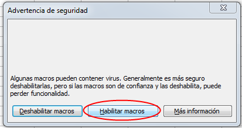
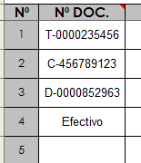
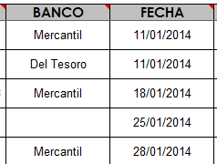
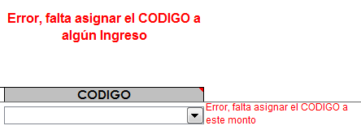
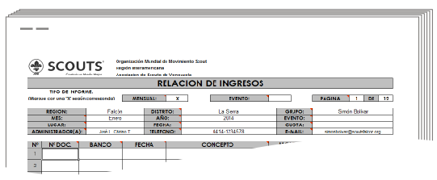

Como llenar el Formato de Ingresos para Eventos
La administración
de cada uno de nuestros eventos o actividades también forma parte de
nuestra responsabilidad ante los demás. Entre más transparente sea el
manejo de los recursos, más credibilidad tendremos, dejando bien en
alto el nombre de nuestra organización y el de nosotros
mismos.
.
• • •
Ingresar en el Panel de Control y sleccionar el botón Ingresos según la actividad

Importante: Es necesario que tengamos instalado MS Excel en nuestra computadora, para que todos los archivos del Sistema funcionen adecuadamente.

Al abrir nuestro archivo Ingresos.xls, este nos pedirá que confirmemos la ejecución de los Macros necesarios para que funciones el sistema.
Debemos pulsar donde dice Habilitar Macros.
Nota: Es
posible que no aparezca este mensaje, si la configuración de Excel está
ajustada para permitir todas las Macros, en este caso no hay ningún
problema.
Finalmente aparecerá una ventana advirtiendo que el archivo o libro,
está vinculado a otros archivos, lo cual es necesario para que funcione
el sistema.
En este caso debemos pulsar sobre el botón Actualizar, tal como lo muestra la imagen.

Datos Generales
Estos datos se llenarán
automáticamente con lo que se escriba en los otros archivos del
sistema, y tiene comentarios explicando de que se trata cada casilla.

Asiento de los Ingresos
Este formato cuenta con varias filas en las cuales se deben reportar
cada uno de los INGRESOS, y cuenta con las siguientes columnas:

A continuación se explica detalladamente cada una de estas columnas
Nº DOC. Aquí debe colocar la información del documento que respalda el Ingreso:
1 Deposito: D-“Numero del Deposito”
2 Cheque: C-“Numero de Cheque”
3 Transferencia: T-“Numero de Transferencia”
4 Efectivo: Efectivo
Es muy recomendable que cada movimiento se respalde con un recibo de Ingreso, cuyo número se
deberá asentar en la columna OBSERVACIONES.

BANCO Coloque el nombre del Banco en donde se realizo el depósito o transferencia; o de donde se emitió en cheque.
En el caso de montos en efectivo, dejar el espacio en blanco.
FECHA Coloque en orden cronológico (empezando por la fecha
más antigua hasta la fecha más reciente) el día, mes y año en que fue
realizado el ingreso.

CONCEPTO : Explique
brevemente el origen del ingreso, por ejemplo: Inscripción, venta de calcomanías, donativo para transporte, etc.
MONTO Bs. Coloque el monto en bolívares (Bs.) incluyendo dos céntimos.
 OBSERVACIONES Coloque aquí información adicional que ayude a la conciliación de las cuentas de manera más rápida y eficiente, por ejemplo:
OBSERVACIONES Coloque aquí información adicional que ayude a la conciliación de las cuentas de manera más rápida y eficiente, por ejemplo:
- Rec. Nº 0102 a nombre de Seisena Roja MF
- Rec. Nº 0103 a nombre de GVJ C.A
- Rec. Nº 0104 a nombre de Evelia Loján
Nota: Para todos lo depósitos es obligatorio
colocar en Observaciones el Nombre y Apellido si es persona natural, o
la razón social de la persona jurídica que beneficia el mismo.
Código: Partida Contable
Estos son los tipos de egresos que intervienen en un registro y
que forman parte de los estados financieros. Para seleccionarlos
simplemente debes pulsar sobre la lista desplegable.

Cuotas Jóvenes = Dinero cancelado por los niños, niñas y jóvenes participantes.
Cuotas Adultos
= Dinero cancelado por los adultos, tanto si van en calidada de apoyo o
como participantes (en caso de eventos de RRAA, reuniones o asambleas).
Autogestión
= Corresponde a todos las entradas que deriven de las actividades
propias de la organización. Por
ejemplo: lo vendido en una tienda, dentro del evento.
Donaciones = Fondos recibidos para el beneficio de la organización.
- Sector Privado: Son
todas aquellas personas naturales o jurídicas que no forman parte del
Estado. Ejemplo: Sr. Pedro Pérez, CACOINPAR, Supermercado Lau.
- Sector Público: Son
todos los entes que forman parte o pertenecen al Estado. Ejemplo:
Gobernación de Estado; Alcaldías y Consejos Municipales; Institutos
Nacionales, Estadales o Municipales, PDVSA.
Ingresos Otros = Corresponde a cualquier ingreso que no esté contemplado en los casos anteriores.
IMPORTANTE
Si se introduce un monto cualquiera; pero no se le asigna un CODIGO, aparecerán 2 señales de advertencia.
La
primera en la parte superior de la columna donde están ubicados los
CODIGOS, y la segunda en la fila específica donde falte asignar el
mencionado.
Esto para evitar errores contables, entre el control de Ingresos y el Resumen Administrativo
Como Reportar
El Sistema permite un monitoreo constante del avance de la gestión
administrativa, por parte del supervisor inmediato; pero esto no es
suficiente para cumplir con las leyes de la República en este sentido.
En
vista de los antes expuesto, para completar cada hoja de reporte agrupe
las copias de los cheques emitidos, bauches de retiro o depósitos,
comprobantes de las transferencias realizadas, facturas y recibos; y
engrápelos en la parte posterior.
Recuerde que máximo deben
ser en grupos de treinta (30) para facilitar el trabajo de verificación
por parte de la Dirección Nacional de Administración.
Es necesario que cada administrador conserve una copia de lo que está entregando.
Estos formatos con las copias deben ser utilizados y presentados
debidamente firmados y sellados, en los informes de Gestión de cada uno
de los entes, llámese Grupos, Distritos o Regiones.
Ayudas

 Para
acceder a este Instructivo, busca la pestaña Instructivo en la parte
inferior del libro (junto a la de los meses), y luego pulsa sobre el
botón Ir al Instructivo, que aparece en esa hoja.
Para
acceder a este Instructivo, busca la pestaña Instructivo en la parte
inferior del libro (junto a la de los meses), y luego pulsa sobre el
botón Ir al Instructivo, que aparece en esa hoja.